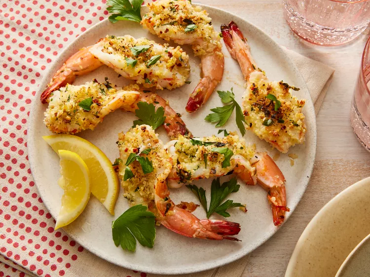

Best shrimp ever

Description
Think shrimp scampi meets a crunchy baked Parmesan topping. You can serve them as an appetizer, on top of cooked pasta with extra lemon-butter sauce, or simply with some grilled bread and flavorful olive oil to dip in.
Ingredients
- Shrimp
- Olive oil
- Lemom
- Panko bread crumbs
- Spices
- Salt and pepper
- Parmesan cheese
- Butter
Steps
- Gather all ingredients.
- Preheat the oven to 450 degrees F
- Peel shrimp, leaving tails intact
- Use a paring knife to cut lengthwise down vein side of shrimp, cutting almost but not all the way through the shrimp
- Bake in the preheated oven until shrimp are cooked through, 8 to 10 minutes
Return to main page